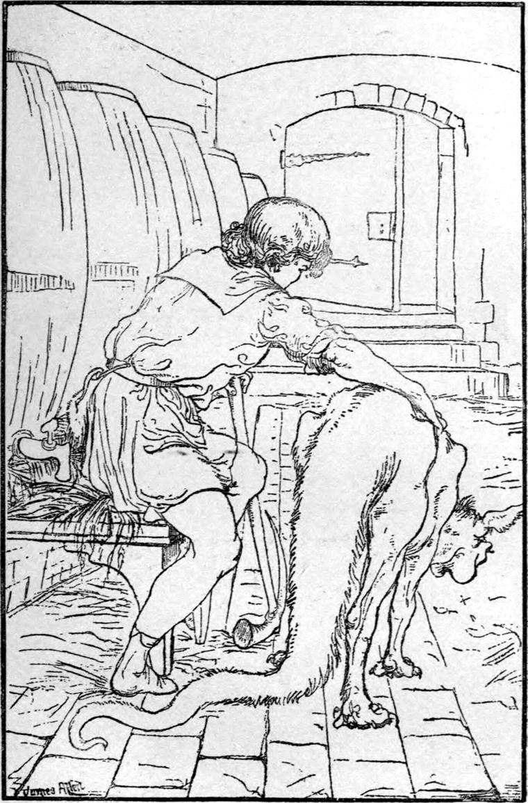

He lighted his candle and examined it. Decayed and broken as it was, it was strongly secured in its place by hinges on the one side, and either lock or bolt, he could not tell which, on the other. A brief use of his pocket-knife was enough to make room for his hand and arm to get through, and then he found a great iron bolt—but so rusty that he could not move it.
Lina whimpered. He took his knife again, made the hole bigger, and stood back. In she shot her small head and long neck, seized the bolt with her teeth, and dragged it, grating and complaining, back. A push then opened the door. It was at the foot of a short flight of steps. They ascended, and at the top Curdie found himself in a space which, from the echo to his stamp, appeared of some size, though of what sort he could not at first tell, for his hands, feeling about, came upon nothing. Presently, however, they fell on a great thing: it was a wine cask.

He was just setting out to explore the place thoroughly, when he heard steps coming down a stair. He stood still, not knowing whether the door would open an inch from his nose or twenty yards behind his back. It did neither. He heard the key turn in the lock, and a stream of light shot in, ruining the darkness, about fifteen yards away on his right.
A man carrying a candle in one hand and a large silver flagon in the other, entered, and came toward him. The light revealed a row of huge wine casks, that stretched away into the darkness of the other end of the long vault. Curdie retreated into the recess of the stair, and peeping round the corner of it, watched him, thinking what he could do to prevent him from locking them in. He came on and on, until curdie feared he would pass the recess and see them. He was just preparing to rush out, and master him before he should give alarm, not in the least knowing what he should do next, when, to his relief, the man stopped at the third cask from where he stood. He set down his light on the top of it, removed what seemed a large vent-peg, and poured into the cask a quantity of something from the flagon. Then he turned to the next cask, drew some wine, rinsed the flagon, threw the wine away, drew and rinsed and threw away again, then drew and drank, draining to the bottom. Last of all, he filled the flagon from the cask he had first visited, replaced then the vent-peg, took up his candle, and turned toward the door.
'There is something wrong here!' thought Curdie.
'Speak to him, Lina,' he whispered.
The sudden howl she gave made Curdie himself start and tremble for a moment. As to the man, he answered Lina's with another horrible howl, forced from him by the convulsive shudder of every muscle of his body, then reeled gasping to and fro, and dropped his candle. But just as Curdie expected to see him fall dead he recovered himself, and flew to the door, through which he darted, leaving it open behind him. The moment he ran, Curdie stepped out, picked up the candle still alight, sped after him to the door, drew out the key, and then returned to the stair and waited. In a few minutes he heard the sound of many feet and voices. Instantly he turned the tap of the cask from which the man had been drinking, set the candle beside it on the floor, went down the steps and out of the little door, followed by Lina, and closed it behind them.
Through the hole in it he could see a little, and hear all. He could see how the light of many candles filled the place, and could hear how some two dozen feet ran hither and thither through the echoing cellar; he could hear the clash of iron, probably spits and pokers, now and then; and at last heard how, finding nothing remarkable except the best wine running to waste, they all turned on the butler and accused him of having fooled them with a drunken dream. He did his best to defend himself, appealing to the evidence of their own senses that he was as sober as they were. They replied that a fright was no less a fright that the cause was imaginary, and a dream no less a dream that the fright had waked him from it.
When he discovered, and triumphantly adduced as corroboration, that the key was gone from the door, they said it merely showed how drunk he had been—either that or how frightened, for he had certainly dropped it. In vain he protested that he had never taken it out of the lock—that he never did when he went in, and certainly had not this time stopped to do so when he came out; they asked him why he had to go to the cellar at such a time of the day, and said it was because he had already drunk all the wine that was left from dinner. He said if he had dropped the key, the key was to be found, and they must help him to find it. They told him they wouldn't move a peg for him. He declared, with much language, he would have them all turned out of the king's service. They said they would swear he was drunk.
And so positive were they about it, that at last the butler himself began to think whether it was possible they could be in the right. For he knew that sometimes when he had been drunk he fancied things had taken place which he found afterward could not have happened. Certain of his fellow servants, however, had all the time a doubt whether the cellar goblin had not appeared to him, or at least roared at him, to protect the wine. In any case nobody wanted to find the key for him; nothing could please them better than that the door of the wine cellar should never more be locked. By degrees the hubbub died away, and they departed, not even pulling to the door, for there was neither handle nor latch to it.
As soon as they were gone, Curdie returned, knowing now that they were in the wine cellar of the palace, as indeed, he had suspected. Finding a pool of wine in a hollow of the floor, Lina lapped it up eagerly: she had had no breakfast, and was now very thirsty as well as hungry. Her master was in a similar plight, for he had but just begun to eat when the magistrate arrived with the soldiers. If only they were all in bed, he thought, that he might find his way to the larder! For he said to himself that, as he was sent there by the young princess's great-great-grandmother to serve her or her father in some way, surely he must have a right to his food in the Palace, without which he could do nothing. He would go at once and reconnoitre.
So he crept up the stair that led from the cellar. At the top was a door, opening on a long passage dimly lighted by a lamp. He told Lina to lie down upon the stair while he went on. At the end of the passage he found a door ajar, and, peering through, saw right into a great stone hall, where a huge fire was blazing, and through which men in the king's livery were constantly coming and going. Some also in the same livery were lounging about the fire. He noted that their colours were the same as those he himself, as king's miner, wore; but from what he had seen and heard of the habits of the place, he could not hope they would treat him the better for that.
The one interesting thing at the moment, however, was the plentiful supper with which the table was spread. It was something at least to stand in sight of food, and he was unwilling to turn his back on the prospect so long as a share in it was not absolutely hopeless. Peeping thus, he soon made UP his mind that if at any moment the hall should be empty, he would at that moment rush in and attempt to carry off a dish. That he might lose no time by indecision, he selected a large pie upon which to pounce instantaneously. But after he had watched for some minutes, it did not seem at all likely the chance would arrive before suppertime, and he was just about to turn away and rejoin Lina, when he saw that there was not a person in the place. Curdie never made up his mind and then hesitated. He darted in, seized the pie, and bore it swiftly and noiselessly to the cellar stair.